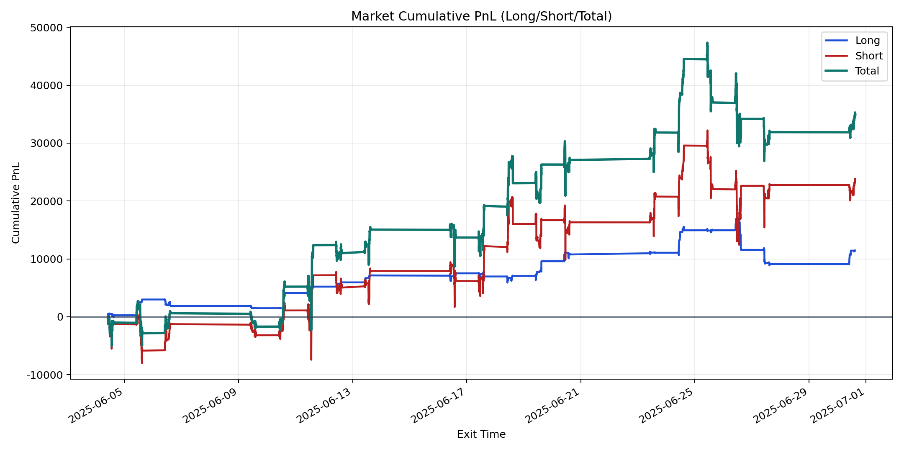
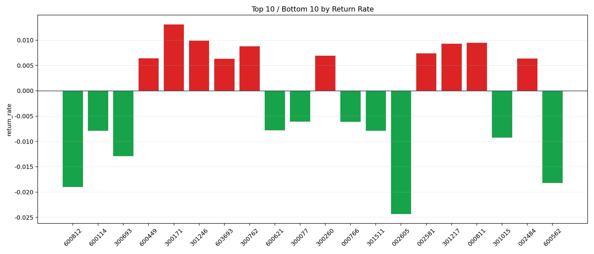

| repo_root | /home/haoranyou/data/output/alpha0.4_1w_5s_3ticks_index_filter/index_weights_1000 |
|---|---|
| period_months | 1 |
| period_label | 2025-06-04_to_2025-06-30 |
| start_time | 2025-06-04 09:50:22 |
| end_time | 2025-06-30 15:00:00 |
| n_trades | 13279 |
| n_symbols | 229 |
| total_pnl | 34899.91885000003 |
| long_total_pnl | 11444.07649999997 |
| short_total_pnl | 23455.842350000068 |
| total_entry_notional | 124036387.0 |
| long_entry_notional | 20189968.0 |
| short_entry_notional | 103846419.0 |
| total_return_rate | 0.00028136839272817604 |
| long_return_rate | 0.0005668199424585502 |
| short_return_rate | 0.0002258704977588112 |
| top_symbols_by_return | ["300171", "301246", "000811", "301217", "300762", "002581", "300260", "600449", "002484", "603693"] |
| bottom_symbols_by_return | ["002605", "600812", "600562", "300693", "301015", "600114", "301511", "600621", "000766", "300077"] |

